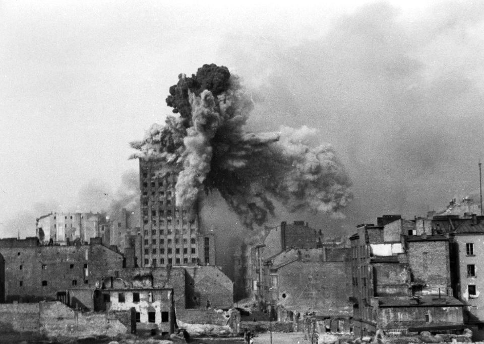

Get to know better one of the unique cities of Poland. Warsaw -
located right in the heart of Europe has to offer much more than
only a convinient location from almost all of the Europoean
countries.
The city that saw the war is an open invitation to dive into it's
full history, architecture and cultural spots. From Museum of Warsaw
Uprising though the charming walk along Vistula river ending up in
Koszyki Hall for a delicious meal followed by the best coctails,
Warsaw will provide you with fully satisfactionary expirience.

Warsaw was founded as early as 1280 by the dukes of Mazovia. The
city has had a particularly tumultuous history for a European
city. It experienced numerous plagues, invasions, and devastating
fires. Warsaw suffered under various occupations - French
(Napoleon I created Dutchy of Warsaw in 1807), Russian and German
( II World War). Probably more of those occupational influences
would have been seen if not to the 85% of Warsaw been destryed by
Nazis in 1945. Throughout the next couple of years after the war
Warsaw proudly rebuilt what it lost but yet again endup under the
Soviet occupation up until late 80's.